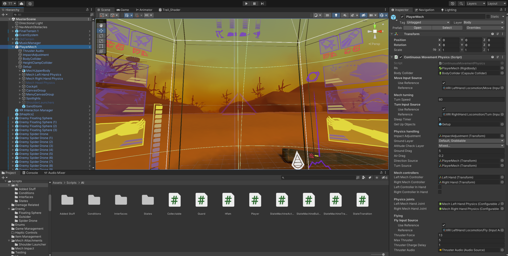
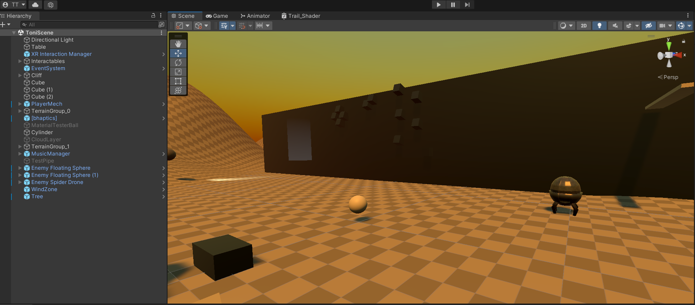

This is a project for XGS (Xamk Game Studios) 2023 Summer Internship. The goal of the project was to explore bHaptics haptic gear capabilities, which XGS had acquired.
We chose to explore this with a VR game, where the player pilots a mech and can feel everything the mech feels. These haptic events included falling, footsteps, firing guns, getting fired at, etc.
Client: Xamk Game Studios
Team and Roles:
Toni Tiilikainen - team lead, programmer, technical artist
Meri Näsi - designer, artist
Camila Motta - artist, sound producer
Design: The original idea was mine. Meri did most of the art design and I did the gameplay & technical design. Otherwise the design process was a team effort.
The design focus early on was in environmental effects. Yet, after the first public playtesting there were a lot of people, who wanted a more combat oriented approach. This changed our focus in the second half of the project to creating enemies and creating more varried mech weaponry.
Achieved: All initial requirements set out by the client were met. The goals placed by our own team were met partially as we set a relatively high bar for ourselves. We had to cut underwater content and story content.
Future: The project achieved the goals set out for it. However, I think the concept is good enough to justify a proper commercial game.
Schedule: The timeframe set out by the client for the project was around three and a half months.
Team leading: The two other team members had no prior experience in game production and design. This made the leadership role relatively simple, though it required me to divert a substantial amount of time to mentor the rest of the team.
VR controls: Programming and designing the controls was mostly straightforward. There were some issues with how the XR controls are defined in Unity and required some re-programming.
Mech controls: The mech's controls were interactions through in-game controls inside the mech's cockpit. Creating these controls was an extensive task, but really cool and fun work.
Haptics: Interacting with the haptic suit interface was straightforward. The provided interface was also relatively limited and difficult to go around for finer controls. I abandoned the attempts of finer controls after few days of research into how complex it would have ended up being.
Continuous movement: Usually, you want to avoid continuous movement in VR because it induces motion sickness. A large portion of my design and programming went into helping mitigate or even negate this motion sickness. Based on the feedback from the testers this was an almost complete success.
Technical artist: As this was the first game project for both of the artists, I had to give a lot of instructions throughout the project. This included a lot of time spent on understanding how the different tools and programs of the artists worked so I could give easy to understand instructions.
Particle effects: This was my first time making particle effects with Unity (I have programmed my own particle effect system using C++, but it is nowhere near as complex).
AI: I used HFSM (Hierarchical Finite State Machine) to create the more complex AI enemies. For the simpler ones I used a simple rules based system. This clear distinction between the two was the moment I realized how important it is to use the right AI architecture to model a behavior.
Missile guidance: The mech has eye-controller (= VR facing) missile targeting. The missiles use physics interaction to attempt to avoid obstacles and home in on its target. This was a really fun to task, and the organic homing of the missiles is still a thing I want to explore in a larger and a more fine-tuned scale.
Physics joints: These used up a lot of my time. Unity's physics joints are great for some things, but they also lack some very "physics-like" behaviors, which often require some re-programming.
Camera shake: This is something you'd expect to make motion sickness worse in VR. However, in this case, the opposite is true. The camera shake allows the brain to disassosiate your lack of movement from the mech's movement, and surprisingly seemed to significantly reduced motion sickness.
UI programming: The mech UI was a very complex and multifaceted task. Both the design and programming took a lot of time. I think it was still worth it as it was one of the most important elements of the game experience.
Day/Night cycle: Unity is really bad at this if you want realism. Programming this and other weather effects turned out to be a lot bigger undertaking than I had originally thought.
Shaders: I programmed some simple shaders to help with the weather and weapon effects.
Most of the testing was ad hoc as the game production was on such a tight schedule.
In addition to the limited internal testing, the game had three public testing days, where university students from different fields could try out the game and give feedback. This feedback was instrumental in guiding the direction of the game as it was being developed.
Picture 1. Mech cockpit as seen in the editor.

Picture 2. Editor view of the test scene.

A simple gameplay video showing some of the game's mechanics. As it is a VR game, the video is only a portion of what the player actually sees while playing with the VR goggles.
This project taught me a massive amount about soft skills in game development. Not just how to use them but how important they are. It also reignited my interest in AI development.